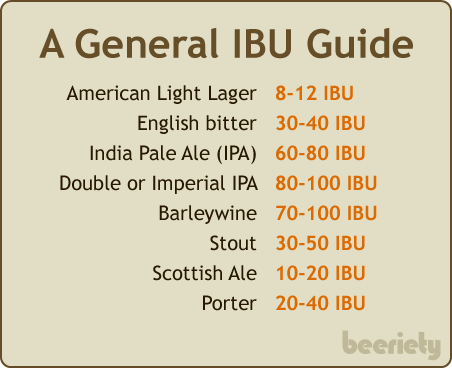
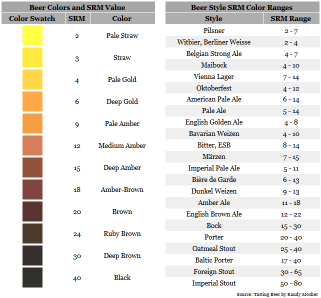

The Best is Out There
For the casual beer drinker it can be daunting to see an endless list of beer choices. What makes each beer different from another? We have broken the types of beers into four parameters that brewers take into account when crafting their beer. Let us help you in making sense of the lingo that you may encounter in your beer drinking adventures.
ABV is an indicator of the amount of alcohol present in a given volume, expressed as a percentage. It is a measure of how strong your beer is. Careful with the pints of anything above 16%!
IBU .The bitterness comes from the hop used during the brewing process. It is said that at 80 IBU a human can start noticing prominent bitter notes.

The level of attenuation varies depending on the yeast used. A higher level of attenuation is due to a high consumption of sugar by the yeast. The brewers then measure the end result through attenuation levels. The more sugar has been converted into alcohol the beer will be drier and denser.
There are different shades of beer. The color of a beer will be influenced by various factors including: level of malt caramelization, time of fermentation, yeast strain, hops usage, and specialty ingredients. There are two popular scales used: EBC (European Brewery Convention) and SRM (Standard Reference Method). The SRM system is primarily used in North and South America.
